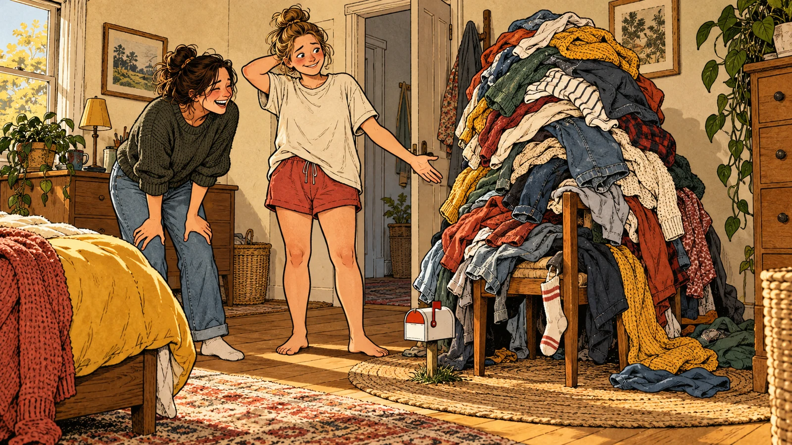

For the friend who brings home another “easy restoration”. The sister whose quick message needs an intermission. The partner who arrives looking immaculate and leaves holding her shoes and someone else’s cake. Give her a laugh and a fairly obvious hint. These proposed chapters have plenty of mess, cheek and questionable judgement to go round.
A taste of the rough stuff
New picture concepts in development. A familiar habit, a visual joke and a useful little nudge.

The Chair Has Joined the Wardrobe · New AI illustration concept01
The Chair Has Joined the Wardrobe
Clean clothes. Worn-once clothes. Clothes awaiting a decision.
At this point, the chair needs its own postcode.
Picture idea: A woman attempts to sit while a towering clothes pile on an ordinary chair has acquired a tiny mailbox and street number.
Picture idea: A traveller stands beside an enormous suitcase; small comic versions of her imagined holiday plans compete to add one more item.
Concept in development
03
The Workout Collection
She has saved enough exercise videos to keep a sports institute busy.
Pick one. The bookmark button has had a decent workout.
Picture idea: A woman in exercise gear faces a comically long ribbon of saved videos while a single mat and simple timer wait nearby.
Concept in development
Your Handbag Has Applied for a Mining Lease
She can produce pliers, emergency earrings and a cough lolly from a previous decade. Finding the house key requires a full excavation on the café table. Somewhere beneath the useful stuff is a sandwich she has stopped asking questions about. This chapter celebrates being prepared for almost anything, provided nobody needs it within the next twenty minutes.
She offered you a mint, then blew the handbag fluff off it.
The receipt says 2019. The banana has declined to comment.
Her keys are in the safe place. Unfortunately, so is everything else.
Picture brief for this chapter
A woman empties an enormous handbag across a small café table. A tiny excavator works through receipts while her friend holds up one key and a remarkably old banana.
That Quick Voice Note Needs an Interval
She’s walking through the supermarket or waiting outside the rural post office, recording “one quick thing”. It includes a family dispute, an unrelated dog sighting and every item currently on special. The intended listener only asked which milk to buy. These pages explore the moment a handy message becomes a podcast with accidental public participation.
The checkout operator is now invested in what happened at Christmas.
“Long story short” was four minutes ago.
Her friend replies, “So, full cream or skim?”
Picture brief for this chapter
A woman records a voice note beside a supermarket fridge. Her speech bubble winds through several aisles, and the checkout operator holds a tiny interval sign.
The Op-Shop Rescue Has Rescued Your Spare Room
A cracked birdbath. A cabinet without handles. A lamp with a plug nobody recognises. She can see the potential, and everybody else can see the trailer filling up. The clean-up, the repairs and the question of where it will live belong to future her. Future her would quite like a word before the next council collection.
“It only needs a quick sand” has swallowed another long weekend.
She bought a second cabinet to store the bits for the first cabinet.
The bargain was fifteen dollars. Getting the car back in the garage is looking dearer.
Picture brief for this chapter
A woman beams beside a trailer of dubious second-hand treasures. A family member attempts to reach the garage through a narrow corridor of unfinished rescues.
Five-Star Entrance. Feral Departure.
She arrives at the wedding, the races or the bowls-club do looking magnificent. Hours later, the shoes are in a chip box and she’s carrying cake on a raffle ticket. The outfit has survived through determination and one overloaded safety pin. This chapter follows the grand exit of someone who insists she has packed everything she could possibly need.
The emergency flats are safely at home, having an excellent night.
She’s holding the good shoes like two freshly caught fish.
The clutch fits a lipstick. The evening has required a small removal truck.
Picture brief for this chapter
A comic triptych shows three different women leaving adult social events: shoes in a chip box, cake balanced on a raffle ticket and an immaculate fascinator above a very improvised outfit repair.
The Dog Is Not the Dishwasher
The dog shares the couch, the car seat and increasingly the cutlery. She calls his interest in the roast “helping”, then wipes a licked spoon on her jeans before putting it back. Visitors have begun guarding their plates. These pages give the much-loved family pest a break from his self-appointed job as head of kitchen quality control.
“He only licked the handle.” A defence nobody requested.
The dog has a seat at dinner and absolutely no qualifications.
She licked the serving spoon. Even the dog looked concerned.
Picture brief for this chapter
A woman stands beside a dog wearing a tiny kitchen-inspector badge. A guest protects a plate while a proper washing-up brush and sink wait conspicuously in the background.